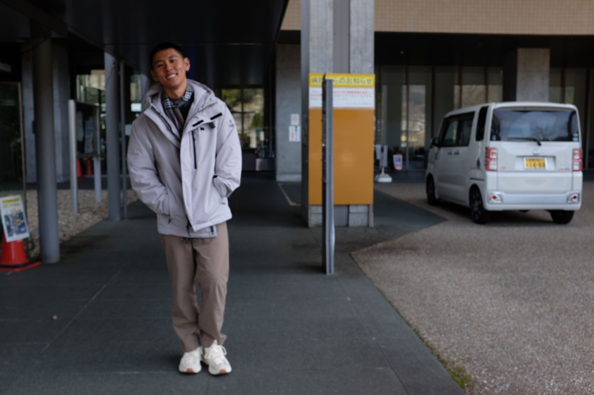
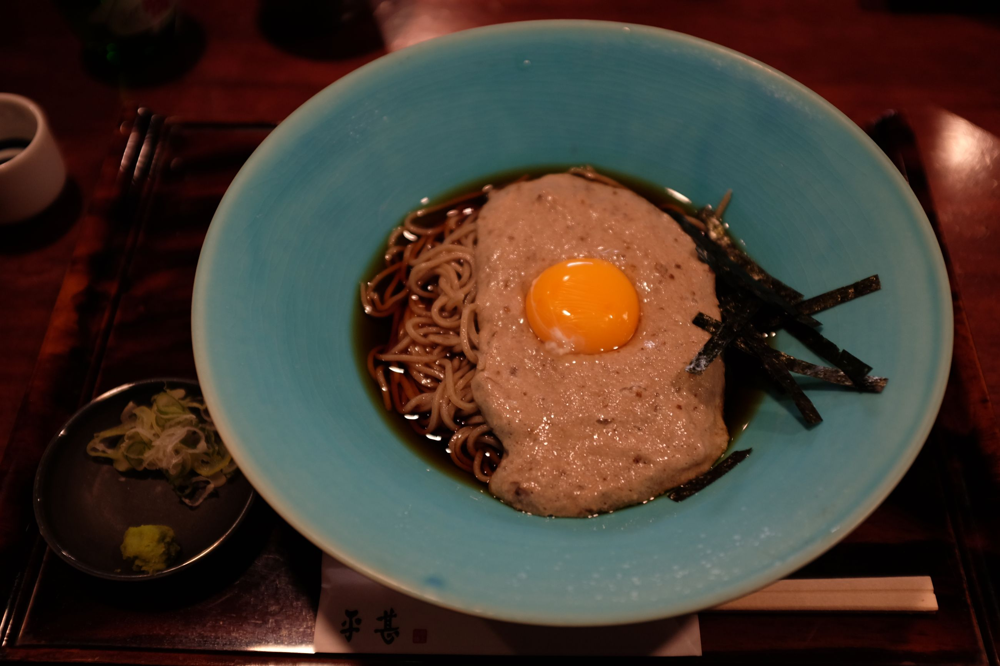
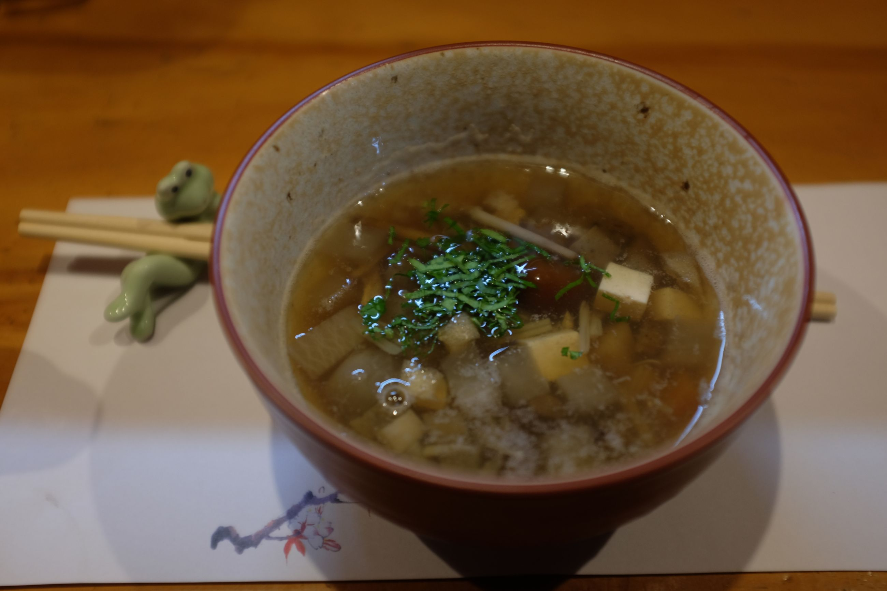
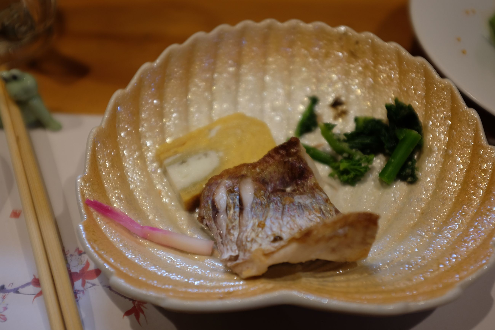
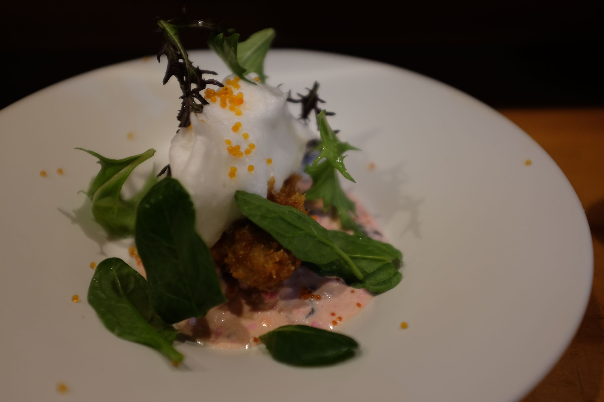
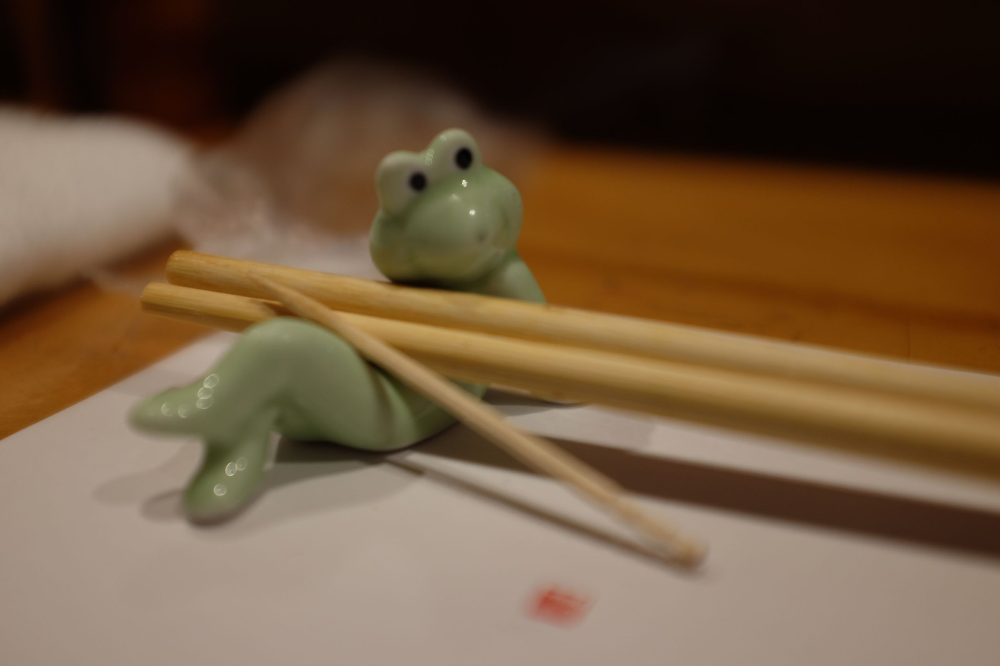
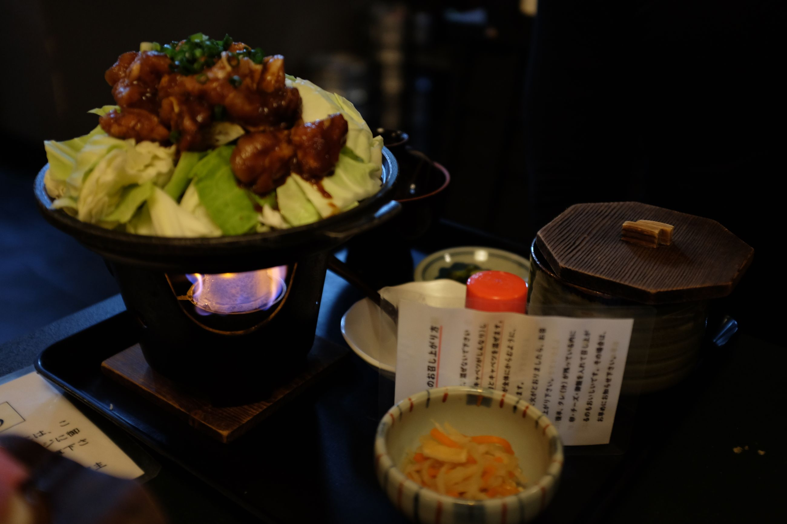
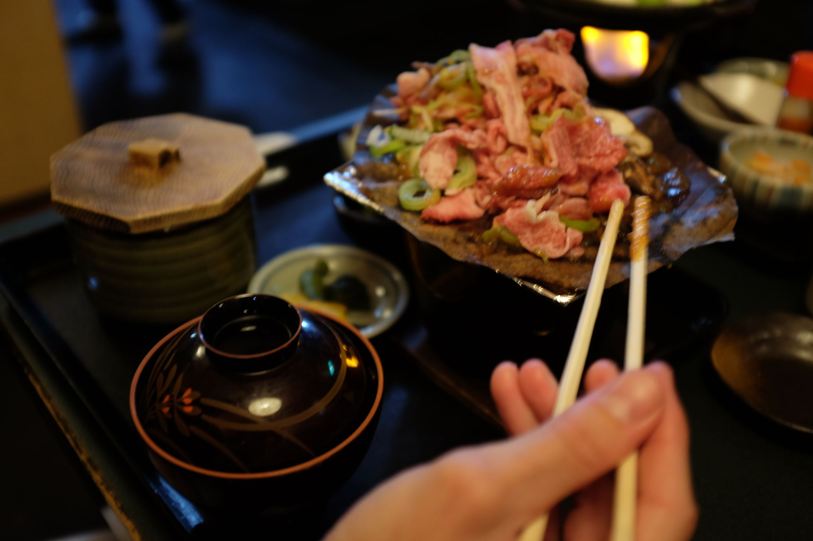
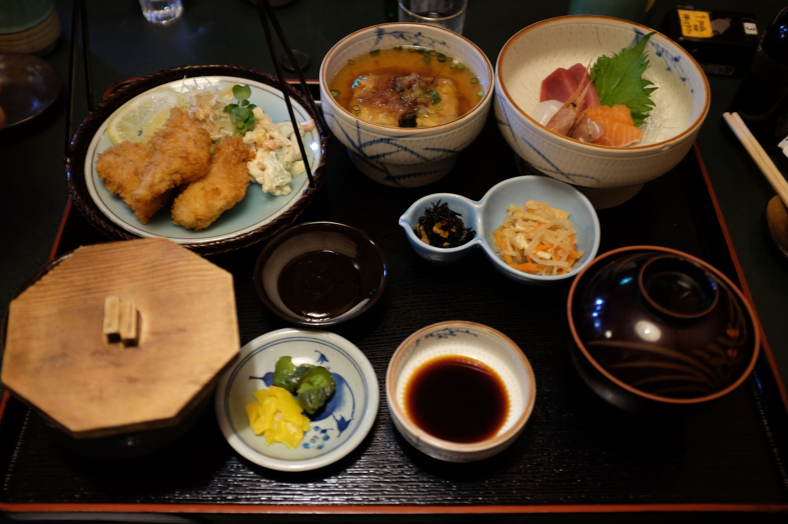

It's our first ski day.
I picked up skiing last year, 2023, in Bend, Oregon, USA. It's tough to do new physical activities in your thirties, but once you get it, it feels good. The turns feel more confident over time, but I still get dragged.
There are three of us. The resort looks similar to the other one's I've been to. About 1 hour in, Jez, our Singaporean friend falls and sprains his knee badly. We spend the morning in the ski patrol unit, and then go to a Gujo Hachiman clinic to get some X-rays. They suspect some torn ligaments, but nothing else. We decided to get some great yam-paste soba, have a small coffee, then just relax in the ryokan. At night, Thorin and I go to Dynaland for some more skiing.
 
Night skiing in Dynaland is not it. It's mostly ice, and there is only an intermediate slope open. Lots of time is spent skidding down for me (my longest one was 10 meters). But, it's all good, and I make it through. After about three runs, I just check out. All skied out. Not the most successful start to our ski trip, but still good fun.
At night, when we get back, we go to a small izakaya down the strete that sells "only fish". We have some yam soup, sashimi, and some other delicacies (some sort of merengue egg white with a pink sauce?). Wash it down with a couple of highballs, and we are good to go.
   
---
Day 3, we decide to give Meiho another shot. Thorin and I head out early up to the slopes. Meiho Ski Resort has a lovely 5 kilometer track that goes from the top of the mountain all the way down at a gradual slope. When I arrive at the top from the lift, the view is amazing. Mountains on mountains, at the foreground and background, stacked against each other. It's a clear day, so they look particularly great. We ski down that several times, and then try some other routes. The best part was skiing halfway down the slope, then stopping in for a curry, and then continuing skiing.
Since 2022, Thorin and I had a dream about doing an "onsen ski trip." The idea was to go skiing then immediately to the onsen -- a pipe dream for our vacations. We finally did it today. After skiing, Meiho onsen was about 700 meters down the road. We drove down, and had a soak. Before we left the slope, it began snowing heavily, and that continued all the way through to the onsen. Soaking in a hot bath in the snow is really something else. That mixture of cold on top and warm on the bottom is the perfect blend after skiing; washes the day off.
For dinner, we stop by a restaurant to try two local foods, "Kechan" and "Hida beef". The first one is chicken with cabbage which you grill yourself. The second one is a nice slice of beef that you also cook yourself on a portable stove. Both are delicious. I order a (what was translated as) "Shanghai tears" set, said to have been named for some Shanghaiese who cried when they had it. Em... yeah. Still delicious, and I like the Japanese style plating of small dishes.
  
Tomorrow, we will do Gujo Hachiman properly.